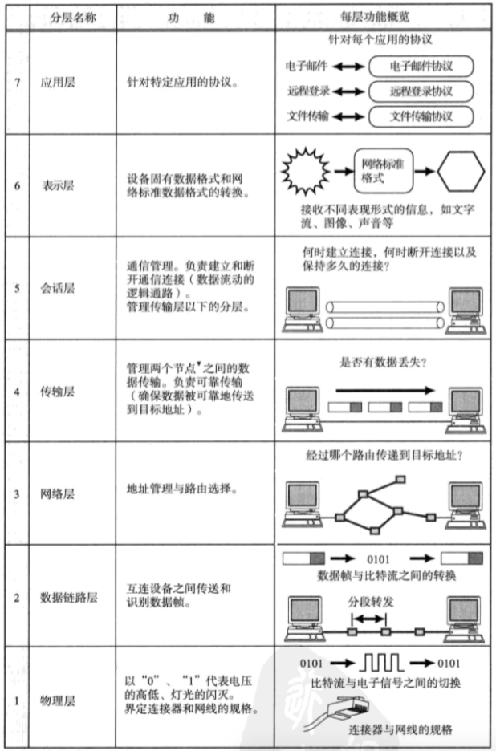
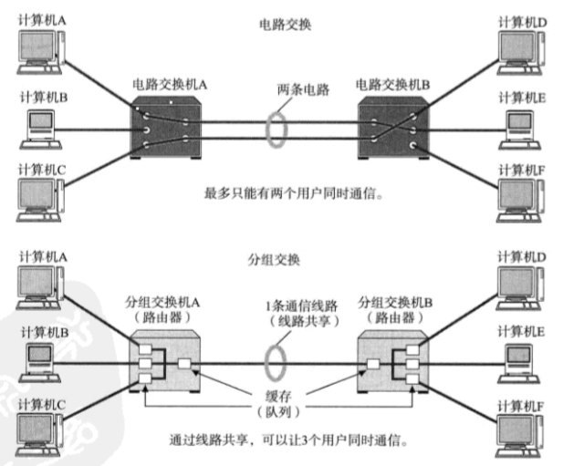
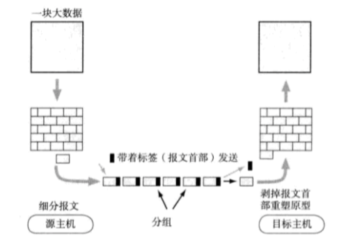
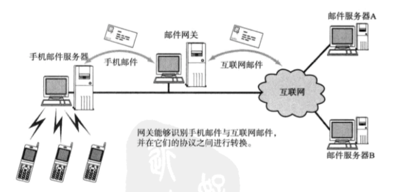

协议
协议就是计算机与计算机之间通过网络实现通信是事先达成的一种“约定”。
两台计算机之间必须能够支持相同的协议，并遵循相同协议进行处理，这样才能实现相互通信。

OSI参考模型
OSI参考模型

对比
OSI参考模型终究是一个“模型”，它只是对各层的作用做了一系列粗略的界定，并没有对协议和接口进行详细的定义。

传输方式的分类
面向有连接型和面向无连接型
通过网络发送数据，大致可以分为面向有连接与面向无连接两种类型；
面向有连接类型（ATM、TCP、帧中继）
在通信传输之前，先打开一个连接。连接被关闭时无法发送数据。
面向无连接类型（IP、UDP、以太网）
无需确认对端是否存在，发送端可随时发送数据。
电路交换与分组交换
电路交换会独占通信线路，分组交换可以共享通信线路；
了解技术的前因后果还是很有必要的

分组交换是指将大数据分割为一个个叫做包的较小单位进行传输的方法。

根据接收端数量分类
单播Unicast：1对1通信
广播Broadcast：同一个数据链路内的所有计算机
多播Multicast：特定组内的通信
任播Anycast：特定组内的任意一台计算机
任播从目标主机群中选择一台最符合网络条件的主机作为目标主机发送消息。通常，所选择的那台特定主机将返回一个单播信号，随后发送端主机只跟这台主机进行通信。
应用：DNS根域名解析服务器
网络的硬件设备
搭建一套网络环境需要涉及到很多电缆和网络设备，下面只介绍下连接计算机和计算机的硬件设备：(学习一个)

网卡：使计算机联网的设备
中继器：OSI模型的第一层物理层上延长网络的设备

（1）一般情况下，中继器两端连接的是相同的通信媒介（有些中继器也可完成不同通信媒介之间的转接工作，例如在同轴电缆和光缆之间转换信号，但是不能在传输速度不同的媒介之间转发）；
（2）有些中继器可提供多个端口服务，被称为中继集线器（Hub）或者集线器，每个端口都可称为一个中继器；
网桥／2层交换机：OSI模型的第二层，数据链路层上延长网络的设备

（1）网桥可以识别数据链路层中的数据帧，并将数据帧临时存储于内存，因此网桥能够连接不同传输速率的数据链路，并且不限制连接网段的个数；
（2）数据链路中有个数据帧叫做FCS，用以校验数据是否正确送达目的地；网桥通过检查该域中的值，将损坏的数据丢弃；
（3）网桥可以通过地址自学机制和过滤功能控制网络流量；

（4）以太网等网络中经常使用交换集线器（Hub），也属于网桥的一种；交换集线器中连接电缆的端口都能提供类似网桥的功能
路由器／3层交换机：OSI模型的第三层，网络层面上连接两个网络、并对分组报文进行转发的设备。

（1）网桥是根据物理地址进行处理，路由器根据IP地址进行处理；
（2）路由器可以连接不同的数据链路，它还有分担网络负荷的作用（由于路由器会分割数据链路，因此数据链路层的广播消息将无法继续传播），某些路由器具备一定的网络安全功能；
4～7层交换机：OSI模型中处理从传输层至应用层的数据

以TCP等协议的传输层及其上面的应用层为基础，分析收发数据，并对其进行特定的处理.
例如：负载均衡器、带宽控制、广域网加速器、特殊应用访问、防火墙等；
网关：OSI模型中负责将从传输层到应用层的数据进行转换和转发的设备

（1）网关与4～7层交换机一样都是处理传输层及以上的数据，但是网关不仅转发数据还负责对数据进行转换；它通常会使用一个表示层或应用层网关，在两个不能进行直接通信的协议之间进行翻译，最终实现两者之间的通信。
（2）应用场景：


各种设备及其对应网络分层预览图：